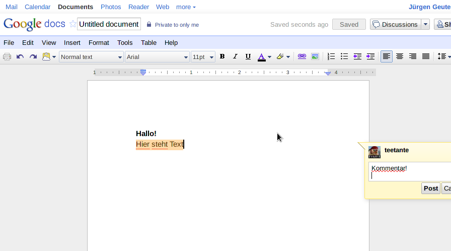
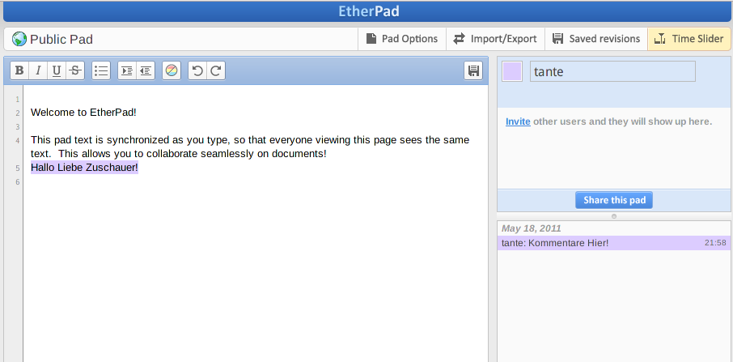

Kooperatives Arbeiten für Non-Techies
Die Situation
Haves
- Projekt
- Interessierte Mitstreiter
- Motivation
- (hoffentlich) Ziele
- Ideen
The Big NoNos
Tooldiskussion
- Jeder hat Lieblingstools
- Spaß am Spielen mit neuen Tools
oder
- Angst vorm Verlassen der Comfort Zone
Problem: Wenig tötet Motivation so schnell wie Tooldiskussionen
Premature Optimization
- "Herumformatieren" an Texten während sie entstehen
- Zeit in "Designvorlagen" investieren
Problem:
- Zeit wird verbrannt mit Trivialitäten
- Arbeiten müssen oft wiederholt werden
4 Regeln
Regel 1
Form follows function
- zuerst Inhalte erzeugen
- "hübsch" machen wenn Inhalte stehen
Regel 2
KISS: Keep It Simple Stupid
- komplexe Tools kosten viel Einarbeitungszeit
- bestehendes Tool-Wissen nutzen
- Tools gegen Widerstand der Nutzer durchsetzen tötet Projekte
Regel 3
Gleichzeitigkeit rockt
- Wie im realen Leben:
frisch > als Konserve - Einzelgespräche erhöhen den Kommunikationsaufwand massiv
- "gemeinsamer Dorfplatz":
- kreativer Input
- Zusammengehörigkeit
Regel 4
The right tool for the job
- Bestimmte Tools erfüllen bestimmte Aufgaben
- "When all you have's a hammer, all you see is nails"
- vgl. Wikipedia
TOOL TIME!
Publikation/Website
- gehostet
- viele optionen umsonst
- blogs
- wordpress.com
- blogger.com
- blogger.de
- wikis
- wikidot.com
- wikkii.com
Kommunikation
- Foren (igitt!)
- forumprofi.de
- Chatrooms
- freenode.net bzw. webchat.freenode.net
- Facebook Groups/Group Chat
- Jabber Chatrooms (falls vorhanden)
- Partychat (http://partychapp.appspot.com/)
Kollaboration
- gemeinsames Arbeiten (meist an Text)
- Anforderungen:
- Versionen
- Autorenverfolgung
- Kommentare (!)
- simultan Arbeiten ist großes Kino
Google Docs
- http://docs.google.com
- Kann nicht nur Text sondern auch Präsentationen und Grafiken
- Export/Download in Office-Dateiformaten
- Erinnert stark an Desktop Apps
- Kommentare sind eher "Anmerkungen" als Diskussion
Google Docs Screenshot

Etherpad
- Open Source Software
- gehostet umsonst unter http://openetherpad.org
- eigener "Chat" für jedes "Pad"
- Vorteil: nur Text mit wenig Strukturinformationen (WYSIWYM: What you see is what you mean)
Etherpad Screenshot

Zusammenfassung
- nutzt, was ihr am besten kennt
- aber verschwendet die Zeit nicht mit Formatieren
- Gleichzeitigkeit ist gut bei Kommunikation und Arbeit
- im Netz für nahezu jedes Problem eine kostenlos gehostete Software
- es existiert viel mehr als ich hier dargestellt habe
Flattr this

Danke für die Aufmerksamkeit
Bei Fragen jetzt hier oder an @tante auf Twitter.
Folien unter